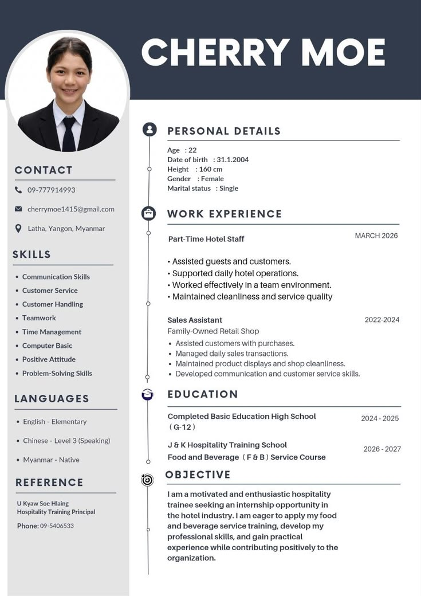
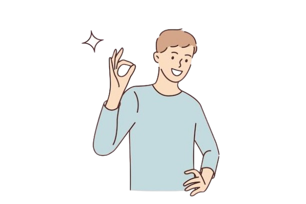

Education
Show your academic background and relevant subjects.
Build Your Resume
Your resume is often the first thing an employer sees. Learn how to create a clear and professional resume, even if you have little or no work experience.

A resume is a short document that introduces your education, skills, experience, projects, and achievements to an employer. Its purpose is to show why you could be a good fit for a position.
Include your full name, professional email address, phone number, and other relevant contact details.
Write a short statement describing the type of position you are looking for and what you hope to contribute.
Include your school, program or degree, and graduation year or expected graduation date.
List skills that are relevant to the position. Include both technical skills and useful soft skills.
Include internships, part-time work, volunteer activities, or other experiences that demonstrate your abilities.
School and personal projects can show what you are capable of, especially when you have limited work experience.

No worries, focus on what you already have.
Show your academic background and relevant subjects.
Include school or personal projects that demonstrate your skills.
Mention organizations, events, volunteer work, or leadership experiences.
Highlight abilities that are relevant to the position.